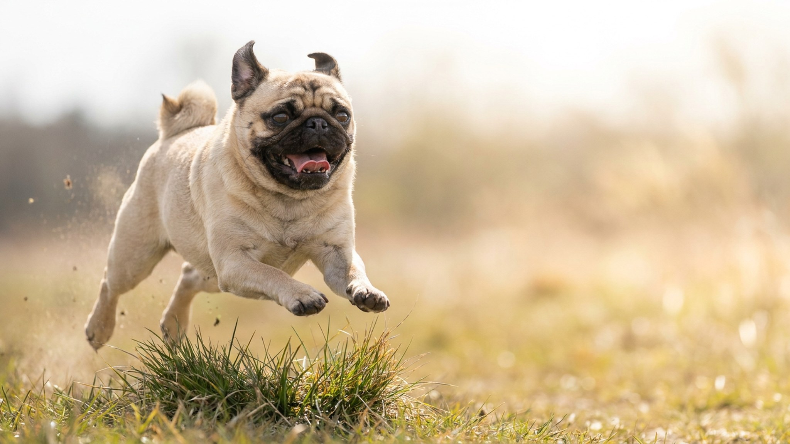

После каждой еды в складках на морде мопса остаются влага и остатки пищи — незаметно для хозяина, но очень заметно для кожи. Брахицефальное строение черепа даёт мопсу и крупные выпуклые глаза, почти не защищённые от пыли и веток. Ниже — как выстроить ежедневный уход, на что обращать внимание и когда не ждать, а везти к ветеринару.
🐾 Всё о вашем питомце — в одном приложении
AI-ветеринар, дневник, напоминания о прививках и уходе. Установите AnimaLife — это бесплатно, в Telegram и MAX.
Кожные складки на морде мопса — это глубокие кармашки, куда не попадает воздух. После еды, питья или умывания в них скапливается влага. В закрытом тёплом пространстве кожа мацерируется быстро — даже за один день. Чем глубже складки у конкретной собаки, тем важнее ежедневный осмотр.
Глаза мопса крупные и выпуклые — это следствие брахицефального строения черепа. Веки прикрывают их меньше, чем у большинства пород. На прогулке пыль, трава и ветки оказываются значительно ближе к глазной поверхности, чем у длинномордых собак.
Глаза мопса ежедневно выделяют небольшое количество секрета — это норма для породы. Он скапливается у внутреннего угла глаза. Убирайте его мягким влажным диском без отдушек, двигаясь от внутреннего угла к внешнему. Используйте отдельный диск для каждого глаза.
На прогулке в ветреную погоду или в зарослях травы мопс рискует получить соринку или царапину. Если после прогулки пёс жмурится или трёт морду лапой — осмотрите глаза при хорошем освещении и при необходимости обратитесь к ветеринару в тот же день.
Слезотечение, прищуривание или помутнение глаза — это повод показать мопса ветеринару, а не ждать, пока пройдёт само.
Хозяин замечает изменения раньше, чем они становятся очевидными. Вот сигналы, при которых не стоит откладывать визит:
Что именно происходит с кожей или глазом и как это корректировать — решает врач после осмотра.
Начинайте с щенячьего возраста: короткий осмотр морды и глаз после каждого кормления, сразу за ним — лакомство. Взрослый мопс, привыкший к ритуалу, воспринимает его спокойно и не вертится. Если пёс уже взрослый и сопротивляется — вводите осмотр постепенно, по одной складке за раз, без спешки.
🐾 Спросите AI-ветеринара прямо сейчас
AnimaLife — приложение, где AI-ветеринар отвечает на вопросы о кошке или собаке 24/7. Бесплатно, без записи и очередей.
🐾 Понравился разбор?
Подпишитесь на канал — каждый день разбираем по одному тревожному симптому у кошек и собак: что в пределах нормы, а когда пора к врачу. Подпишитесь, чтобы не пропустить разбор, который может спасти здоровье вашего питомца.
Материал носит информационный характер и не заменяет очную консультацию ветеринара.